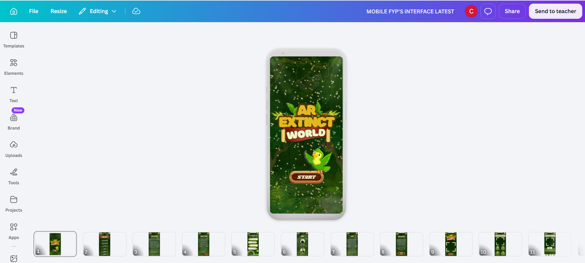
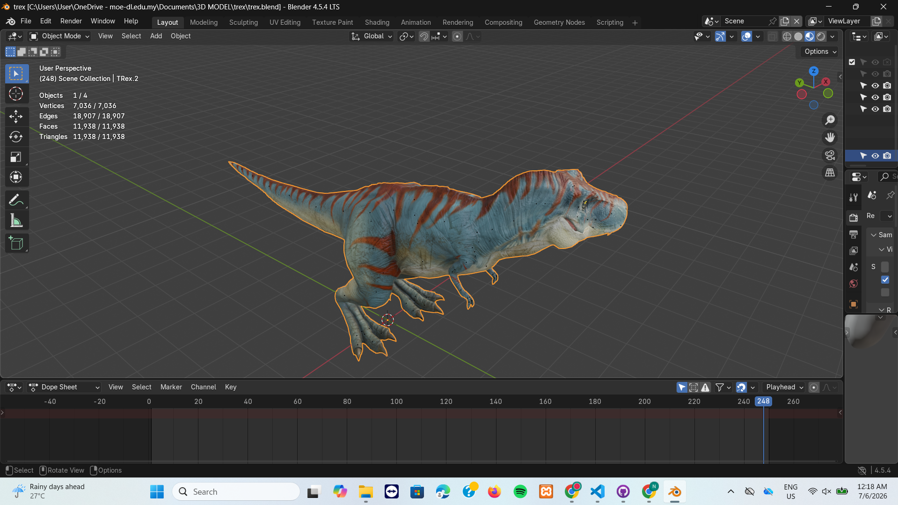
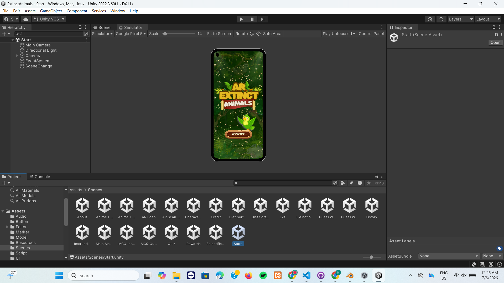

Final Year Project / Academic Milestone
This project is built systematically following the ADDIE Instructional Design Model to showcase structural teamwork, software engineering, and immersive media asset development. The core objective of the AR Extinct World application is to bring 15 extinct species—including the T-Rex, Woolly Mammoth, and Dodo bird—back to life through interactive 3D spaces.
Developed inside the Unity Engine, the application handles real-time image marker scanning, dynamic UI panels built using modern glassmorphism design principles, and interactive barrier challenges. Users can navigate smoothly from the main menu directly into a dedicated Animal Facts section, which bypasses cluttered HUD icons to present educational breakdowns. The application leverages an updated Infographics Layout paired with personalized, custom-recorded audio narration to dictate species facts natively.
Main Menu & Animal Facts Layout

Low-poly Animal Model Layout

Barrier Challenge Logic Configuration